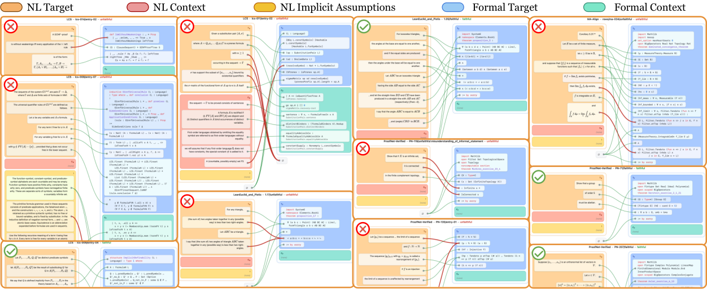

Benchmark aligning informal math statements with Lean 4 formalizations and Mathlib dependencies, with phrase-level faithfulness labels annotated by Lean experts.
Abstract
Autoformalization (AF) requires more than compilation: formal statements must preserve the meaning of their informal sources, a property known as faithfulness. An emerging frontier is the automated evaluation of this property, yet most existing methods operate at the statement level and produce whole-item verdicts, failing to reveal how individual expressions correspond or which contextual interpretations support the judgment. This omission is consequential because AF is inherently theory-scale: target statements derive their meaning from surrounding mathematical material and unstated conventions. We formulate faithfulness evaluation as a context-aware align-then-label problem: identifying phrase-level correspondences between informal and formal statements and assigning a faithfulness label to each under explicitly specified contextual interpretations and assumptions. We also introduce FaithAlign, the first theory-scale faithfulness benchmark comprising 460 items and 4,982 annotated phrase-level links, alongside FaithAlign-Gap, a companion set of 146 items with informal context and assumptions withheld. Each FaithAlign item includes the target statement pair, relevant context, formal dependencies, and, where needed, assumptions specifying one given interpretation. Across 8 models, GPT-6 Astra achieves the highest defect F1 at 47.8% and identifies all defects in only 4.5% of items with two or more defects. On FaithAlign-Gap, Astra identifies only 28.2% of undecidable items as such. These results show the difficulty of recovering context-dependent correspondences, establishing FaithAlign as a testbed for fine-grained, context-aware faithfulness evaluation.
Problem
Autoformalization must preserve meaning (faithfulness), not just compile. Existing faithfulness evaluators give whole-statement verdicts that do not localize defects, ignore surrounding context, and cannot express cases where context is too underspecified to decide.
Approach
Faithfulness evaluation is cast as a context-aware align-then-label task. An evaluator links regions of an informal statement, its source context and assumptions to regions of a Lean target and its formal dependencies (e.g., Mathlib declarations), then labels each link faithful, unfaithful, or undecidable. FaithAlign contains 460 items with 4,982 expert-annotated links drawn from LeanEuclid, Pistis, MA-Align, LCS-Bench and ProofNet-Verified. A companion set, FaithAlign-Gap (146 items), withholds the informal context and assumptions.

Figure 2: A bird’s-eye-view illustration of eleven samples (with truncation) from FaithAlign, where each segment from natural language (NL) or formal language is bucketed into Target, Context, or Implicit Assumptions. Segments from both sides are matched or unconnected (connected to \varnothing ): faithful links are indicated by green lines, while unfaithful links are marked in red, implying that
Results
Across 8 LLMs, the best model (GPT-6 Astra) reaches 47.8% defect F1. It finds all defects in only 4.5% of items with two or more defects, and recognizes only 28.2% of undecidable FaithAlign-Gap items as undecidable.